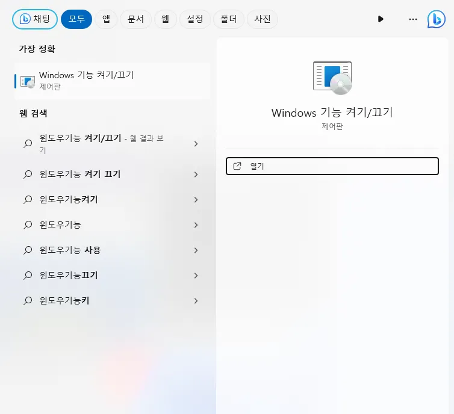
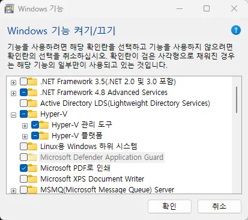
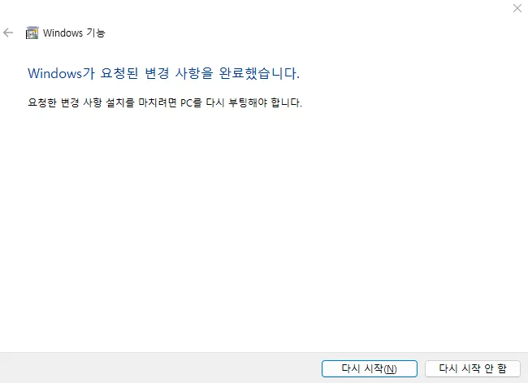
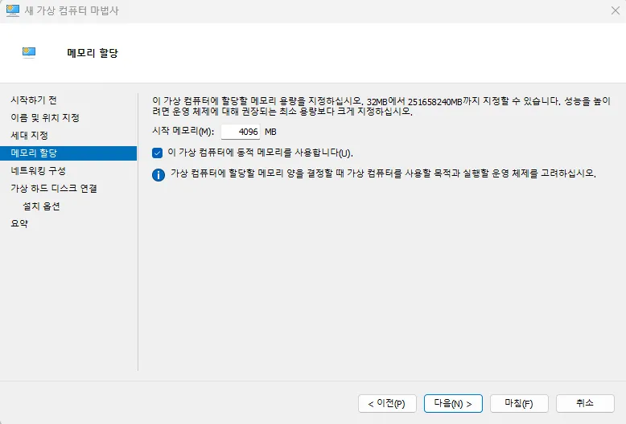
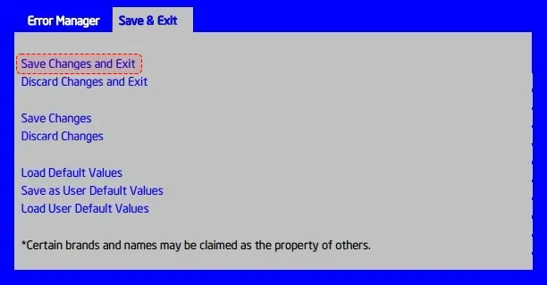
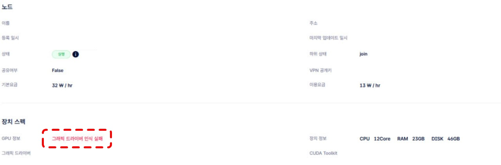
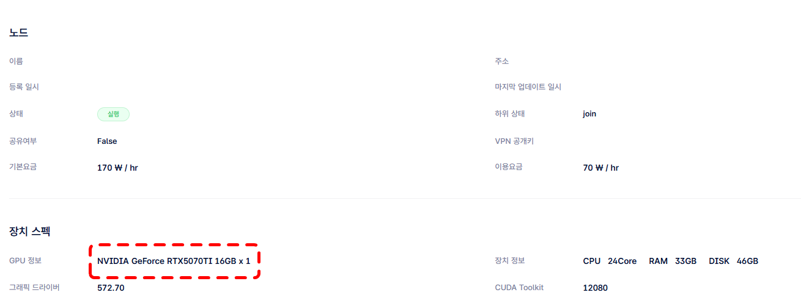

Troubleshooting
Common issues that occur during node operation and how to resolve them.
Tip
If the issue is not resolved, contact gcube support at support@gcube.ai.
Agent-Related Errors
Initializing Error

If an Initializing error occurs, check whether Hyper-V is enabled.
How to Enable Hyper-V
-
Search for "Turn Windows features on or off" in the Windows search bar and open it.

-
Find "Hyper-V" and check the box.

Warning
The Hyper-V feature is only available by default on Windows PRO editions.
-
Click the Restart button to reboot.

Hyper-V Configuration After Reboot
-
Search for "Hyper-V Manager" in the search bar and open it.

-
Right-click your computer name and select "New" → "Virtual Machine".

-
Set the virtual machine name and storage location, then click Next.

Note
Since virtual Windows installations can be large, it is recommended to choose a drive with sufficient free space.
-
Select the virtual machine generation.

Generation Description Generation 1 Supports 32-bit and 64-bit Windows installations Generation 2 Supports 64-bit Windows installations only Warning
Once selected, the generation cannot be changed. If issues arise, delete and recreate the virtual machine.
-
Set the memory to allocate to the virtual machine. Consider your current RAM capacity and the tasks you plan to run. (1GB = 1024MB)

-
Enter the location and size for the virtual hard disk. The capacity can be expanded later, so set it with your installed disk capacity in mind.

Failed to Change VM State Error
If the error Failed to change VM state (0x???????) appears, you need to enable virtualization in the BIOS. Contact your manufacturer with the error code shown in the parentheses.
BIOS Setup
Press the F2 key rapidly multiple times immediately after powering on to enter BIOS.
Note
On devices with SSDs, the boot speed is very fast. Press the F2 key repeatedly as soon as you power on.
BIOS Entry Methods by Manufacturer
| Manufacturer | BIOS Key | Boot Priority Key | Site |
|---|---|---|---|
| Intel | F2 | F10 | Link |
| AMD | F2 | F10 | Link |
| MSI | DEL | F11 | Link |
| ASUS | F2 or Del | ESC or F8 or F12 | Link |
Intel BIOS Setup
- Press the F2 key when the logo screen first appears during boot.
-
In the main tab, change Auto Boot to disabled.

-
Return to the top tab and press the right arrow key to navigate to the Save & Exit tab.
-
Select Save Changes and Exit to boot with the changes saved.

NVIDIA Driver Recognition Error
Symptom
The node status may display as 'Failed' while providing GPU sharing.

Cause
This can occur when two or more graphics drivers are running simultaneously on the OS.
Example: Running both NVIDIA and iGPU (AMD) graphics drivers at the same time.

Since gcube only supports NVIDIA graphics cards, the iGPU (AMD) driver must be removed in this case.
Resolution
- Use the AMD manufacturer's driver removal utility (DDU) to uninstall the iGPU driver.
- Reinstall the gcube Agent.
Other Solutions
- Disable iGPU in the BIOS
- Find the iGPU in Device Manager and disable it, then uninstall the driver
After removing non-NVIDIA graphics drivers and reinstalling the Agent, the node will display correctly as shown below.

Warning
If the issue persists, contact gcube support at support@gcube.ai.